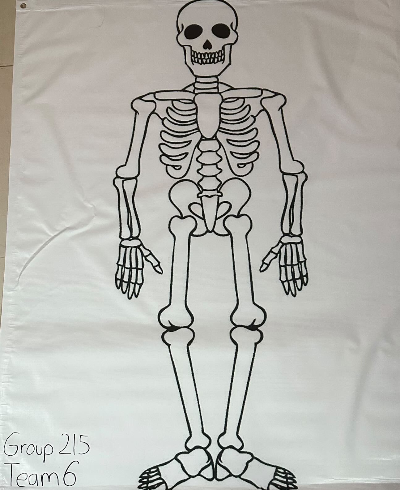
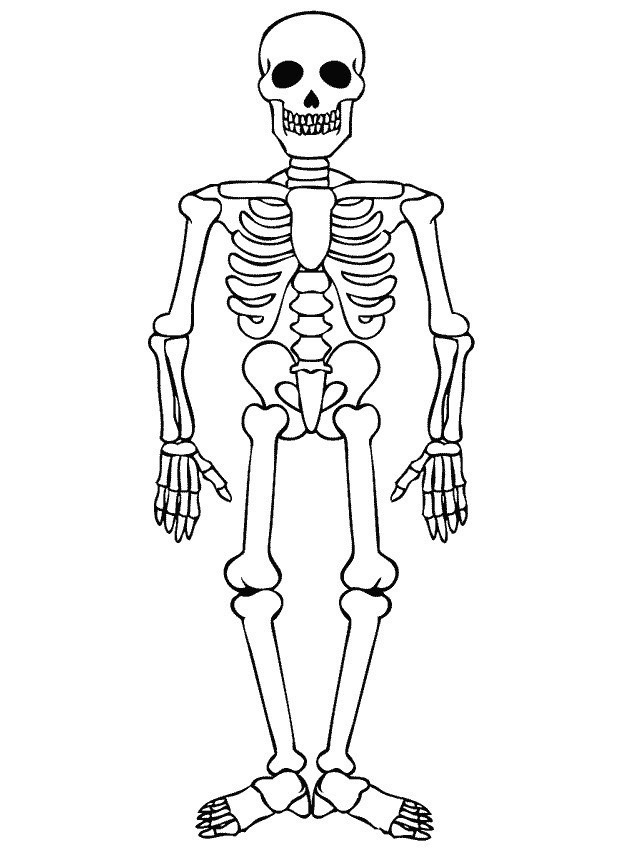
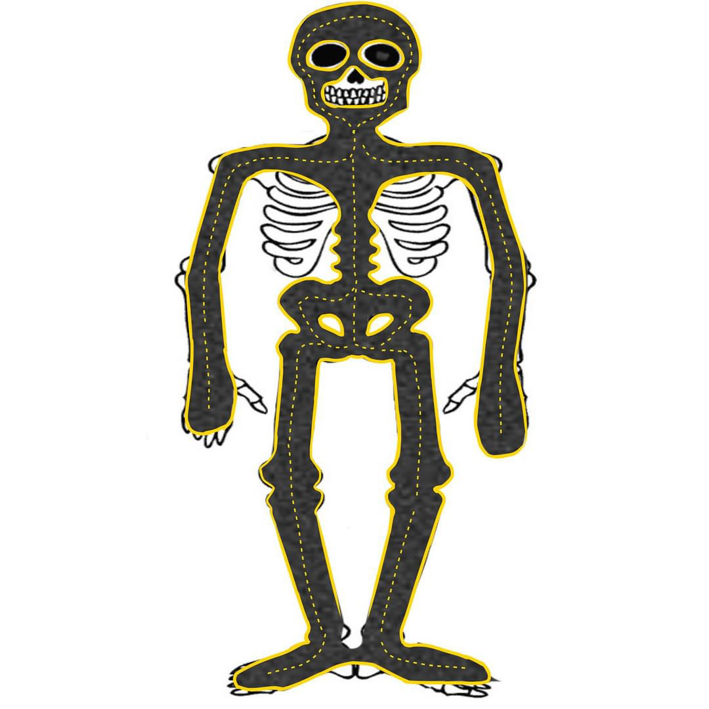

Track
This is the skeletal system track for the specialized robot to follow. this track mimics the structure of bones, providing a pathway for the robot to follow. With sensors and cameras guiding its every move. the robot goes along the skeletal track reaching its destination.
  
How to 3D print yotube video
How to 3D print yotube video
Home Page